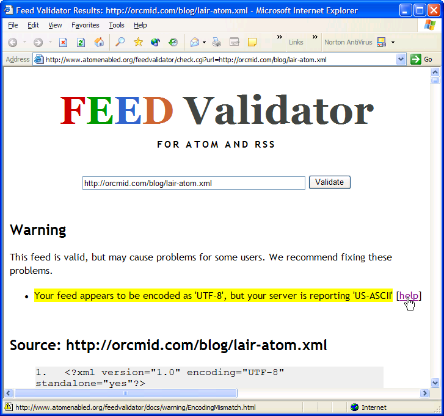

Incident Report X040703
Atom Encoding Incoherence
Blog Examples
|
|
Incident Report X040703 |
The Atom entry used to provide a corrected notice of lockdown for Orcmid's Lair exposes a problem with the encoding parameter of the XML preamble being in conflict with the hosted-site Content Type that is specified in serving up the Atom feed.
2004-07-24-16:20 -0700 At this time, this situation applies to
Orcmid's Liar lair-atom.xml (snapshot: ):
Professor von Clueless clu-atom.xml (snapshot: )
Numbering Peano pn-atom.xml (snapshot: )
It does not apply to:
Spanner Wingnut's wing-atom.xml.
(snapshot:
The snapshots are copies of the feeds at the time we published clean notices of them, and they currently exhibit the incoherence in all but one case. The first buttons check the current actual feed and the results may differ.
The following replacement was intended to establish a grounded notice for Orcmid's Lair and provide a reproducible demonstration of the encoding incoherence. However, the copy of the feed that I associated with this report validates
[updated 2004-07-24-14:25 - 0700 corrected for acceptability to the on-line Atom validator. The permanent <id>-element for this notice is now a reachable web location. Incident details are developed in Incident Report X040702: Blogger FTP Corruption. Status of these blogs is summarized at X040701: Web Log Status. The invalidity of the Atom Feed is yet another problem. The poor rendering of the Invalid Atom button is a different problem still.]
IMPORTANT NOTICE : 2004-07-15-20:23Z - On Friday, July 2, while posting a new article on Professor von Clueless in the Blunder Dome, Blogger transferred unintelligible binary to the default (current) page, an archive page, the posting page and the Atom feed. That blog is now rolled-back to the last backed-up content before that event. There will be no further posting to my non-experimental Blogger-intermediated Blogs until the situation is resolved. THESE BLOGS ARE CURRENTLY LOCKED DOWN: Orcmid's Lair, Numbering Peano, and Professor von Clueless in the Blunder Dome. Blogger is denied FTP access to those blogs and comment postings will fail. The only active blog is the experimental Spanner Wingnut Muddleware Laboratory. Live forensic and trouble-shooting analysis is performed there. That makes it a dangerous place. I do not recommend subscribing to that atom feed because it can be corrupted during incident trouble-shooting. -- Dennis E. Hamilton
The on-line validator produces the following report for lair-atom.xml with the cleaned-up lockdown notice:

The conflict is a rather complicated one having to do with how Blogger decides what encoding is being used and how that is communicated to the host site, which serves up the Atom feed to requesting browsers and news feed aggregators.
During a lockdown of Orcmid's Lair for troubleshooting, a manual feed entry was inserted based on the validated one for Spanner Wingnut. In using this entry, the only difference, beside the modification date, is
The Valid Atom button is changed to refer to the Orcmid's Lair atom feed, lair-atom.xml.
The <id>-entry was not modified because the impact of the preceding change was not appreciated.
The feed is not valid, although that has nothing to do with this entry.
[updated 2004-07-23-18:14 corrected for acceptabillity to the on-line Atom validator. The permanent <id>-element for this notice is now a reachable web location. Incident details are developed in Incident Report X040702: Blogger FTP Corruption. Status of these blogs is summarized at X040701: Web Log Status.]
The feed was edited using jEdit with the XML plug-in. The rules for the feed were analyzed and developed in accordance with Labnote B040701: Atom Feed Synthesis.
| You are navigating Orcmid's Lair |
created 2004-07-23-22:35 -0700 (pdt) by orcmid |